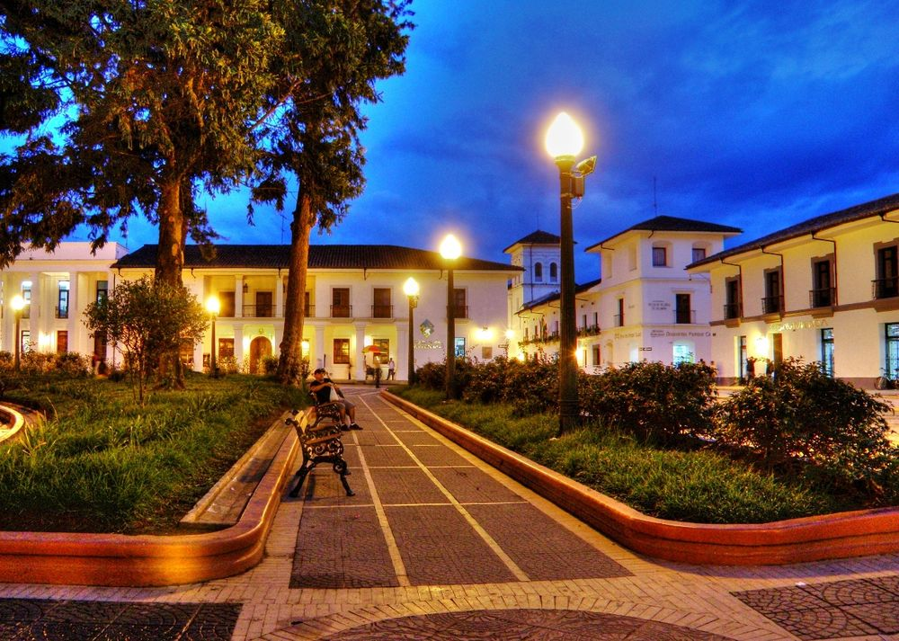
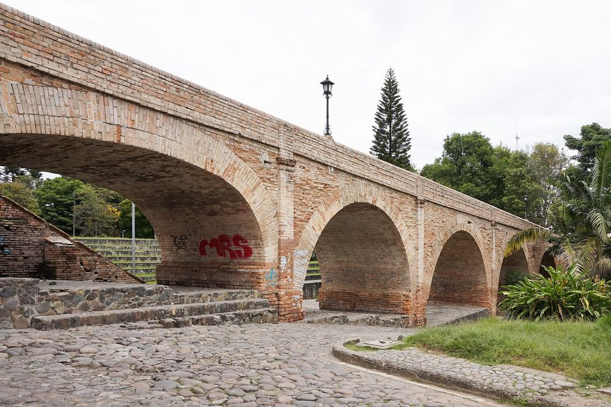
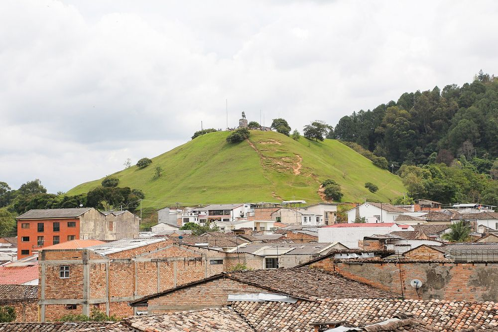
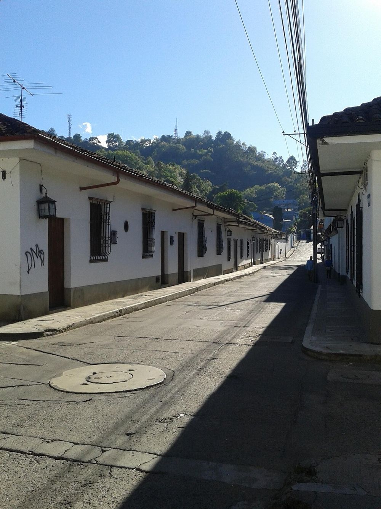
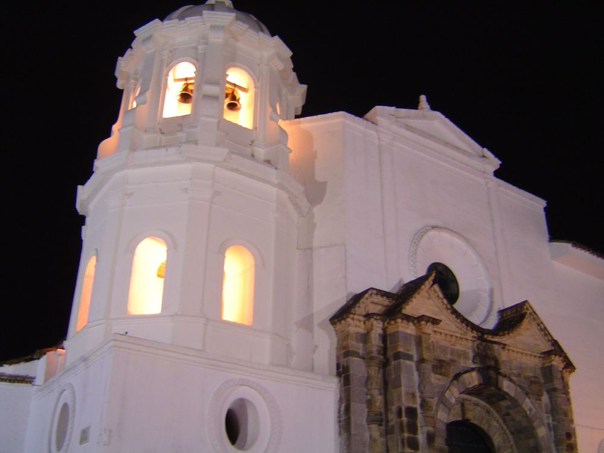
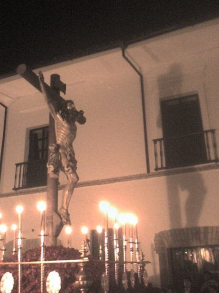

Hotel Alma Blanca · Popayán
Tu descanso en
la Ciudad Blanca
A pocas cuadras del Parque Caldas y la Torre del Reloj, en el corazón del centro histórico de Popayán.
Torre del Reloj y Catedral de Popayán
Encuentra tu habitación
Descubre Popayán
Fundada en 1537, Popayán conserva uno de los centros históricos coloniales mejor cuidados de Colombia. Sus fachadas encaladas le dan el nombre de Ciudad Blanca.






Nuestras habitaciones
Reservas registradas
| N.º | Huésped | Habitación | Entrada | Salida | Personas | Estado | Pago |
|---|
Pagar una reserva
El total se calcula con las noches de la reserva y el precio por noche de la habitación.
Regístrate como huésped
Con tu registro puedes elegirte como titular al hacer una reserva.